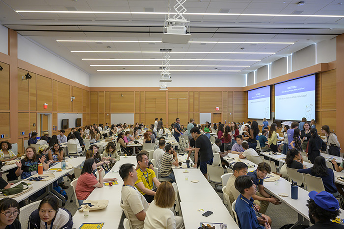

Why Networking Matters
Networking allows you to learn from others' experiences, gain valuable insights into different roles and organizations, and uncover opportunities that may not be publicly advertised. Developing your connections is a skill that grows over time—and one that can give you a real advantage in today’s job market.
At the University of Michigan School of Information (UMSI), building your professional network is an essential part of your career journey. The Career Development Office (CDO) is here to help you make meaningful connections with industry professionals, alumni, faculty, and peers. Whether you’re exploring career paths, seeking advice, or looking for job and internship opportunities, strong professional relationships can open doors and provide lasting support throughout your career.
Need feedback? You can always meet with a CDO Career Coach to review your materials.